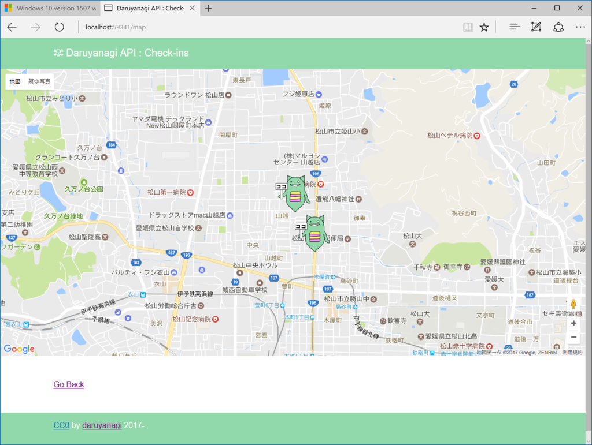
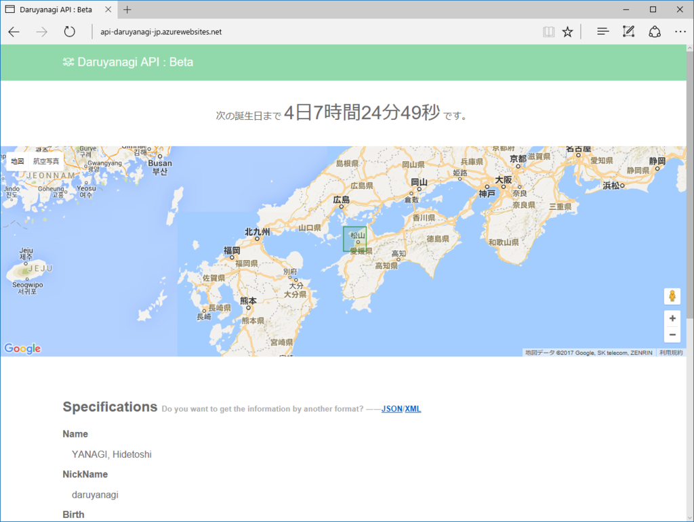
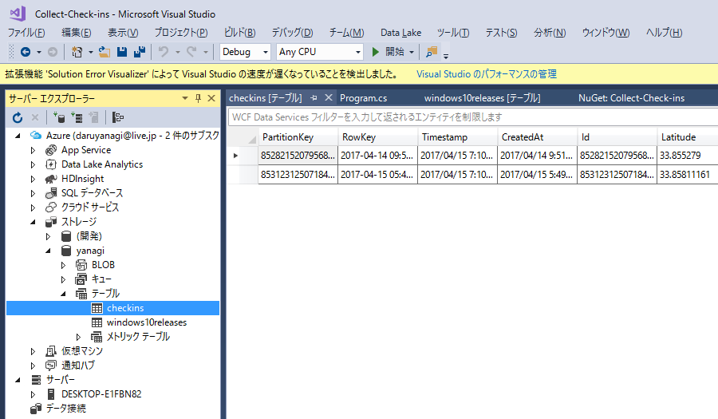
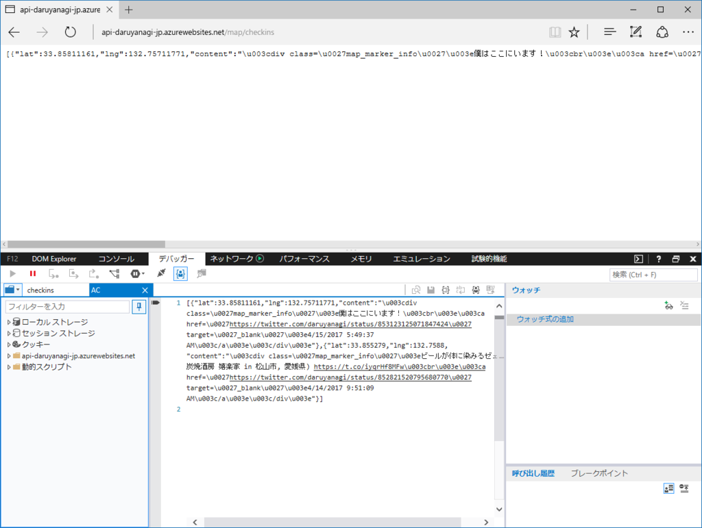
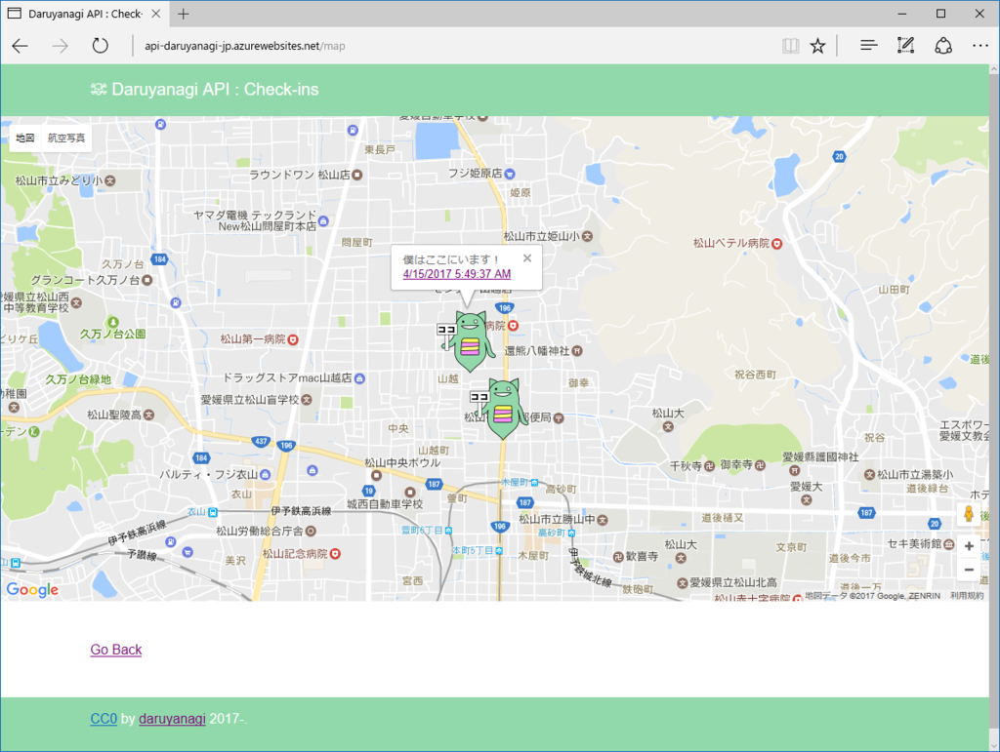

Azure Web App＋Job＋Table Storage ：Twitter の位置情報を拾ってマッピングする
公開日：

以前 WebMatrix＋SQL CE で作っていたものを Visual Studio 2017 で編集したら、ランタイムだかライブラリのバージョンの食い違いで起動不能になった＆いろいろ試行錯誤したけど Visual Studio 2017 から SQL CE（WebMatrix.Data）がうまく扱えなかったので、データを Azure Table Storage へ保存するように書き換えた。
ぶっちゃけよくわかっていないのだけど、ちゃんと動いているみたいなのでよしとする（ぉ
Twitter の位置情報

Twitter の位置情報は
- Place：大まかな位置を共有（矩形）
- Coordinates：経度・緯度を正確に共有（点）
の2つがあるみたい。
面倒な話だが Coordinates はアプリで明示的に・共有する都度［正確な位置情報を共有］オプションを有効にしなければ共有されない（Foursquare/Swarm などのチェックインアプリでは共有されることもあるみたいだが、それはアプリの意図した動作だと思うので問題ない）。今回ほしいのは Coordinates なので、これを定期的に収集することにした。
public static void CollectCheckIns() { // CONNECTION_STRING は Azure Table Storage の接続文字列 // // Web Jobs プロジェクトを作成 // ・単なるコンソールアプリみたい // // NuGet で // ・CoreTweet：Twitter のライブラリ // ・WindowsAzure.Storage // なんかをインストールしておくtry { var account = CloudStorageAccount.Parse(CONNECTION_STRING); var client = account.CreateCloudTableClient(); var table = client.GetTableReference("checkins"); table.CreateIfNotExists();
// めいいっぱいツイートをかき集めてくる var tweets = tokens.Statuses .UserTimeline(count: 200) .Where(_ => _.Coordinates != null);
foreach (var tweet in tweets) { var entity = new CheckinEntity(tweet);
var operation = TableOperation.InsertOrReplace(entity);
table.Execute(operation);
Console.WriteLine($"{entity.Url} is collected"); } } catch (Exception exception) { System.Diagnostics.Debug.WriteLine(exception.Message); } }
基本的な流れは簡単だと思った。Table Storage に保存するデータ（モデル？）を TableEntity の派生クラスとして定義し、InsertOrReplace 操作にそのインスタンスをわたし、実行するだけ。
モデルの定義には、引数のないコンストラクター（必須）と、使いやすいように引数を設定したコンストラクターを作り、後者で PartitionKey と RowKey（いずれも string 型、必須）を設定する。この二つのキーでデータを特定・範囲指定・並び替えするみたいだけど、よくわからんかったのでツイートの Id と CreatedAt をキーにしておいた。
public class CheckinEntity : TableEntity { public CheckinEntity() { } public CheckinEntity(Status status) { this.PartitionKey = status.Id.ToString(); // RowKey にスラッシュは含められない this.RowKey = status.CreatedAt.UtcDateTime.ToString("u"); Id = status.Id; Text = status.Text; ScreenName = status.User.ScreenName; Latitude = status.Coordinates.Latitude; Longitude = status.Coordinates.Longitude; CreatedAt = status.CreatedAt.UtcDateTime; } public long Id { get; set; } public string Text { get; set; } public string ScreenName { get; set; } public double Latitude { get; set; } public double Longitude { get; set; } public DateTime CreatedAt { get; set; } public string Url { get { return $"https://twitter.com/{ScreenName}/status/{Id}"; } } }
ちょっとハマったのは、RowKey にスラッシュを含められないこと。table.Execute() が 400 という HTTP ステータスコードを返して失敗するときは、このあたりを疑ってみるといいのかも。今回はスラッシュを含まず、並び替えにも使える書式 "u" で ToString() しておいた。
成功すると、こんな感じで Table Storage にデータが格納される。

データを読み出す場合は、こんな感じ。
public static IEnumerable<CheckinEntity> Get() { var account = CloudStorageAccount.Parse(CONNECTION_STRING); var client = account.CreateCloudTableClient(); var table = client.GetTableReference("checkins"); var rangeQuery = new TableQuery<CheckinEntity>(); return table.ExecuteQuery(rangeQuery).OrderByDescending(_ => _.CreatedAt); }
データが多くなってきたら、ちゃんと範囲を絞ってクエリしたほうがいいのかもしれない。

あとはこれを JSON で吐くようにして――
var map_element = document.getElementById("daru_map"); var map; var markerData; var xhr = new XMLHttpRequest(); xhr.open("get", "/map/checkins", false); xhr.onload = function(){ markerData = JSON.parse(this.responseText); } xhr.send(null); function initMap() { map = new google.maps.Map(map_element, { center: markerData[0], zoom: 15, }); for (var i = 0; i < markerData.length; i++) { (function () { //マーカーの設定と作成 var marker = new google.maps.Marker({ position: { lat: markerData[i].lat, lng: markerData[i].lng }, // title: markerData[i].title, icon: "/Assets/Marker.png", map: map }); //情報ウインドウの設定と作成 var infoWindow = new google.maps.InfoWindow({ content: markerData[i].content }); //情報ウインドウのオープンをマーカーのクリックイベントに登録 marker.addListener('click', function () { infoWindow.open(map, marker); setTimeout(function () { infoWindow.close(); }, 1000 * 3) }); }()); } }
Google マップにプロットしてみた（情報ウィンドウは一つ開いたら一つ閉じるようにしたかったけど、なんかうまくいかんのでタイマーで閉じた）。

テキトーだけど、今回はこのぐらいで。
追伸
Web Job の話をするのを忘れたけど、単に作った Job をアップロードしてスケジューリング実行するだけなので割愛。今は 3 時間おきにデータを収集するようにしている。